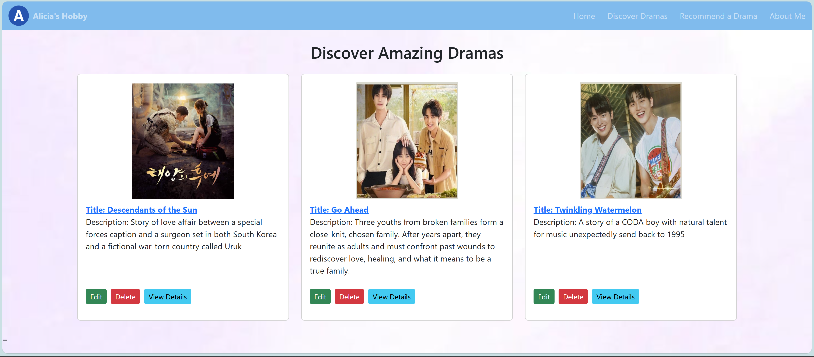
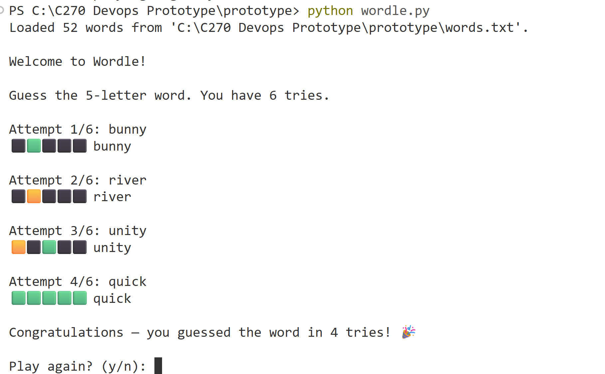

Worked individually to create a wesbite that I love so I share my drama list to everyone. I want eveyone to use this wesbite to see what interesting drama they can watch. I also want to share my feelings about the drama and make some recommendation to everyone.
Skills: Creativity, Communication
Developed a full-stack food ordering system as part of a group project. The system includes user login, menu browsing, cart functionality, and order processing.
Technologies: Node.js, Express, MySQL
Learning: Learned backend development, database integration, and how to build real-world web applications.
Demo video (2x speed)

Worked on deploying a game using Docker containers. Although the project faced challenges, I gained experience in containerisation and debugging deployment issues.
Technologies: Docker, Linux, GitHub workflows to automate deployment
Learning: Learned how applications run in containers and how to troubleshoot system issues.